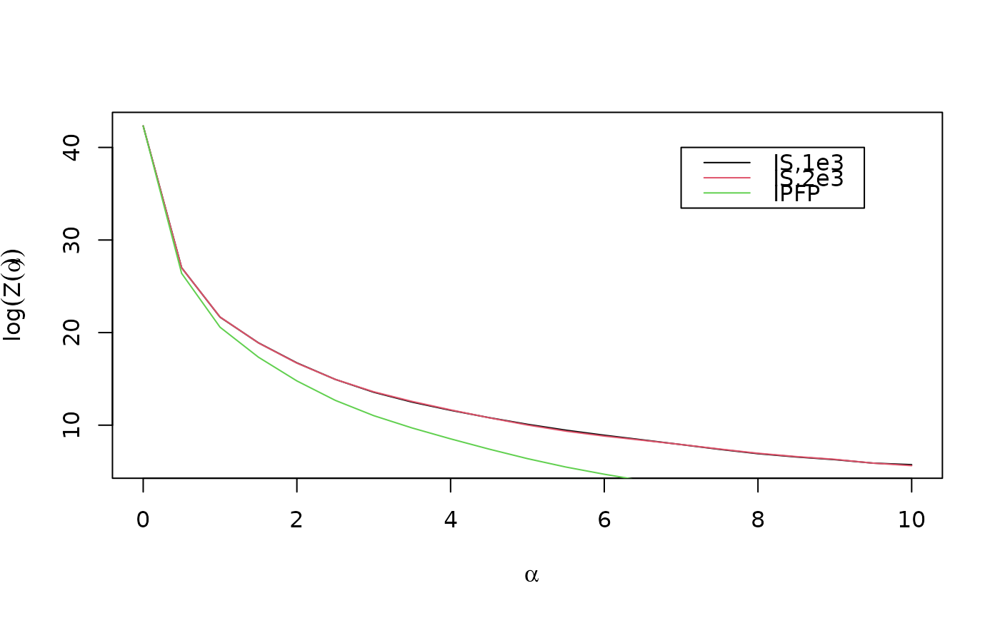

Estimate the logarithm of the partition function of the Mallows rank model.
Choose between the importance sampling algorithm described in
(Vitelli et al. 2018)
and the IPFP algorithm for computing
an asymptotic approximation described in
(Mukherjee 2016)
. Note that exact partition functions
can be computed efficiently for Cayley, Hamming and Kendall distances with
any number of items, for footrule distances with up to 50 items, Spearman
distance with up to 20 items, and Ulam distance with up to 60 items. This
function is thus intended for the complement of these cases. See
get_cardinalities() for details.
Usage
estimate_partition_function(
method = c("importance_sampling", "asymptotic"),
alpha_vector,
n_items,
metric,
n_iterations,
K = 20,
cl = NULL
)Arguments
- method
Character string specifying the method to use in order to estimate the logarithm of the partition function. Available options are
"importance_sampling"and"asymptotic".- alpha_vector
Numeric vector of \(\alpha\) values over which to compute the importance sampling estimate.
- n_items
Integer specifying the number of items.
- metric
Character string specifying the distance measure to use. Available options are
"footrule"and"spearman"whenmethod = "asymptotic"and in addition"cayley","hamming","kendall", and"ulam"whenmethod = "importance_sampling".- n_iterations
Integer specifying the number of iterations to use. When
method = "importance_sampling", this is the number of Monte Carlo samples to generate. Whenmethod = "asymptotic", on the other hand, it represents the number of iterations of the IPFP algorithm.- K
Integer specifying the parameter \(K\) in the asymptotic approximation of the partition function. Only used when
method = "asymptotic". Defaults to 20.- cl
Optional computing cluster used for parallelization, returned from
parallel::makeCluster(). Defaults toNULL. Only used whenmethod = "importance_sampling".
Value
A matrix with two column and number of rows equal the degree of the
fitted polynomial approximating the partition function. The matrix can be
supplied to the pfun_estimate argument of compute_mallows().
References
Mukherjee S (2016).
“Estimation in exponential families on permutations.”
The Annals of Statistics, 44(2), 853--875.
doi:10.1214/15-aos1389
.
Vitelli V, Sørensen, Crispino M, Arjas E, Frigessi A (2018).
“Probabilistic Preference Learning with the Mallows Rank Model.”
Journal of Machine Learning Research, 18(1), 1--49.
https://jmlr.org/papers/v18/15-481.html.
See also
Other partition function:
get_cardinalities()
Examples
# IMPORTANCE SAMPLING
# Let us estimate logZ(alpha) for 20 items with Spearman distance
# We create a grid of alpha values from 0 to 10
alpha_vector <- seq(from = 0, to = 10, by = 0.5)
n_items <- 20
metric <- "spearman"
# We start with 1e3 Monte Carlo samples
fit1 <- estimate_partition_function(
method = "importance_sampling", alpha_vector = alpha_vector,
n_items = n_items, metric = metric, n_iterations = 1e3)
# A matrix containing powers of alpha and regression coefficients is returned
fit1
#> [,1] [,2]
#> [1,] 0 4.232411e+01
#> [2,] 1 -5.106832e+01
#> [3,] 2 5.711640e+01
#> [4,] 3 -4.016860e+01
#> [5,] 4 1.762612e+01
#> [6,] 5 -4.974544e+00
#> [7,] 6 9.175853e-01
#> [8,] 7 -1.099142e-01
#> [9,] 8 8.232800e-03
#> [10,] 9 -3.500635e-04
#> [11,] 10 6.446402e-06
# The approximated partition function can hence be obtained:
estimate1 <-
vapply(alpha_vector, function(a) sum(a^fit1[, 1] * fit1[, 2]), numeric(1))
# Now let us recompute with 2e3 Monte Carlo samples
fit2 <- estimate_partition_function(
method = "importance_sampling", alpha_vector = alpha_vector,
n_items = n_items, metric = metric, n_iterations = 2e3)
estimate2 <-
vapply(alpha_vector, function(a) sum(a^fit2[, 1] * fit2[, 2]), numeric(1))
# ASYMPTOTIC APPROXIMATION
# We can also compute an estimate using the asymptotic approximation
fit3 <- estimate_partition_function(
method = "asymptotic", alpha_vector = alpha_vector,
n_items = n_items, metric = metric, n_iterations = 50)
estimate3 <-
vapply(alpha_vector, function(a) sum(a^fit3[, 1] * fit3[, 2]), numeric(1))
# We can now plot the estimates side-by-side
plot(alpha_vector, estimate1, type = "l", xlab = expression(alpha),
ylab = expression(log(Z(alpha))))
lines(alpha_vector, estimate2, col = 2)
lines(alpha_vector, estimate3, col = 3)
legend(x = 7, y = 40, legend = c("IS,1e3", "IS,2e3", "IPFP"),
col = 1:3, lty = 1)

# We see that the two importance sampling estimates, which are unbiased,
# overlap. The asymptotic approximation seems a bit off. It can be worthwhile
# to try different values of n_iterations and K.
# When we are happy, we can provide the coefficient vector in the
# pfun_estimate argument to compute_mallows
# Say we choose to use the importance sampling estimate with 1e4 Monte Carlo samples:
model_fit <- compute_mallows(
setup_rank_data(potato_visual),
model_options = set_model_options(metric = "spearman"),
compute_options = set_compute_options(nmc = 200),
pfun_estimate = fit2)